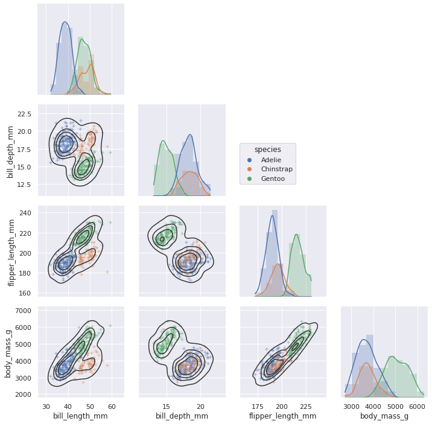

seaborn
Contents
17. seaborn¶
17.1. Intro¶
# Import seaborn
import seaborn as sns
# Apply the default theme
sns.set_theme()
# Load an example dataset
tips = sns.load_dataset("tips")
# Create a visualization
sns.relplot(
data=tips,
x="total_bill", y="tip", col="time",
hue="smoker", style="smoker", size="size",
)
<seaborn.axisgrid.FacetGrid at 0x7fd9a2468e20>

dots = sns.load_dataset("dots")
sns.relplot(
data=dots, kind="line",
x="time", y="firing_rate", col="align",
hue="choice", size="coherence", style="choice",
facet_kws=dict(sharex=False),
)
<seaborn.axisgrid.FacetGrid at 0x7fd965b81370>
fmri = sns.load_dataset("fmri")
sns.relplot(
data=fmri, kind="line",
x="timepoint", y="signal", col="region",
hue="event", style="event",
)
<seaborn.axisgrid.FacetGrid at 0x7fd96593fdf0>
sns.lmplot(data=tips, x="total_bill", y="tip", col="time", hue="smoker")
<seaborn.axisgrid.FacetGrid at 0x7fd9a2470070>
sns.displot(data=tips, x="total_bill", col="time", kde=True)
<seaborn.axisgrid.FacetGrid at 0x7fd95ff4e5b0>
sns.displot(data=tips, kind="ecdf", x="total_bill", col="time", hue="smoker", rug=True)
<seaborn.axisgrid.FacetGrid at 0x7fd95c6aac40>
sns.catplot(data=tips, kind="swarm", x="day", y="total_bill", hue="smoker")
<seaborn.axisgrid.FacetGrid at 0x7fd95c5b6490>
sns.catplot(data=tips, kind="violin", x="day", y="total_bill", hue="smoker", split=True)
<seaborn.axisgrid.FacetGrid at 0x7fd95c4d5340>

sns.catplot(data=tips, kind="bar", x="day", y="total_bill", hue="smoker")
<seaborn.axisgrid.FacetGrid at 0x7fd95c433250>
penguins = sns.load_dataset("penguins")
sns.jointplot(data=penguins, x="flipper_length_mm", y="bill_length_mm", hue="species")
<seaborn.axisgrid.JointGrid at 0x7fd95c38c5b0>
sns.pairplot(data=penguins, hue="species")
<seaborn.axisgrid.PairGrid at 0x7fd95c29c9d0>
g = sns.PairGrid(penguins, hue="species", corner=True)
g.map_lower(sns.kdeplot, hue=None, levels=5, color=".2")
g.map_lower(sns.scatterplot, marker="+")
g.map_diag(sns.histplot, element="step", linewidth=0, kde=True)
g.add_legend(frameon=True)
g.legend.set_bbox_to_anchor((.61, .6))

sns.relplot(
data=penguins,
x="bill_length_mm", y="bill_depth_mm", hue="body_mass_g"
)
<seaborn.axisgrid.FacetGrid at 0x7fd95c5adfa0>

sns.set_theme(style="ticks", font_scale=1.25)
g = sns.relplot(
data=penguins,
x="bill_length_mm", y="bill_depth_mm", hue="body_mass_g",
palette="crest", marker="x", s=100,
)
g.set_axis_labels("Bill length (mm)", "Bill depth (mm)", labelpad=10)
g.legend.set_title("Body mass (g)")
g.figure.set_size_inches(6.5, 4.5)
g.ax.margins(.15)
g.despine(trim=True)
<seaborn.axisgrid.FacetGrid at 0x7fd946089c70>